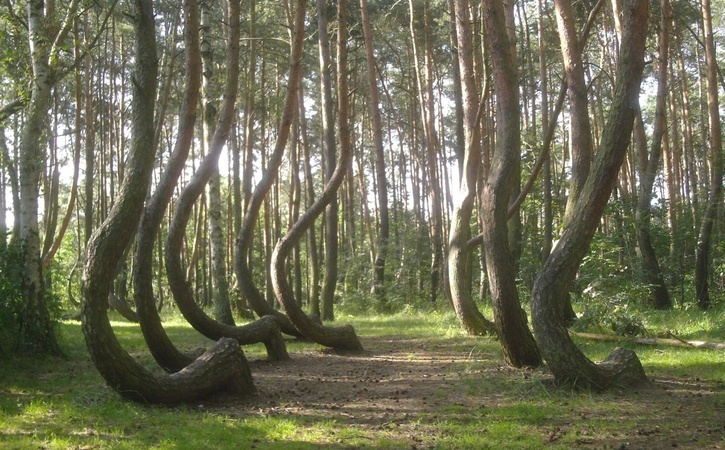
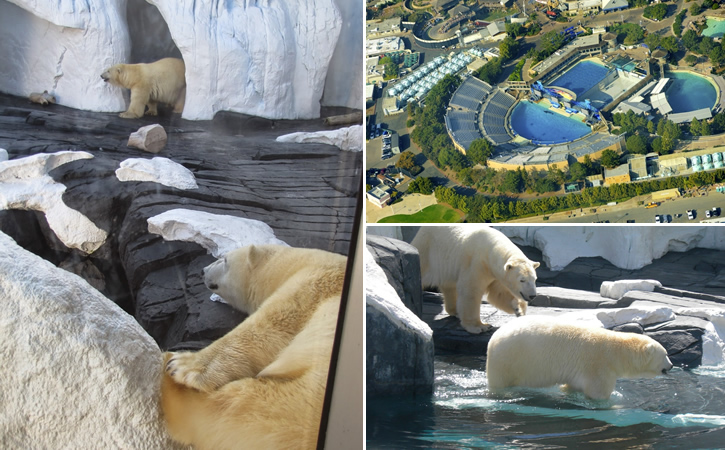

Blog Assombrado
Notícias e reportagens sobre o desconhecido
Principais Postagens

Conheça a Enigmática "Crooked Forest": Centenas de Árvores
em uma Floresta Foram Entortadas por "Forças Misteriosas", na Polônia?

O Mistério de Szenja: Uma Ursa Polar Morreu de "Coração Partido"
ao ser Separada de Sua Companheira no SeaWorld, nos Estados Unidos?
Últimas Postagens
O Projeto Manhatan e a Construção das
Primeiras Bombas Atômicas
A Misteriosa "Vulture Stone": Um "Pilar de Pedra"
Provocou um Verdadeiro Caos na Terra Há 13 Mil Anos?
O "Fantasma de um Homem" Subindo uma Escadaria
Apareceu em uma Mansão "Mal-Assombrada" do Século XVII, na
Inglaterra?
Sereias: Lenda, Fotos, Vídeos, Relatos e
Análises. Será que elas existem?